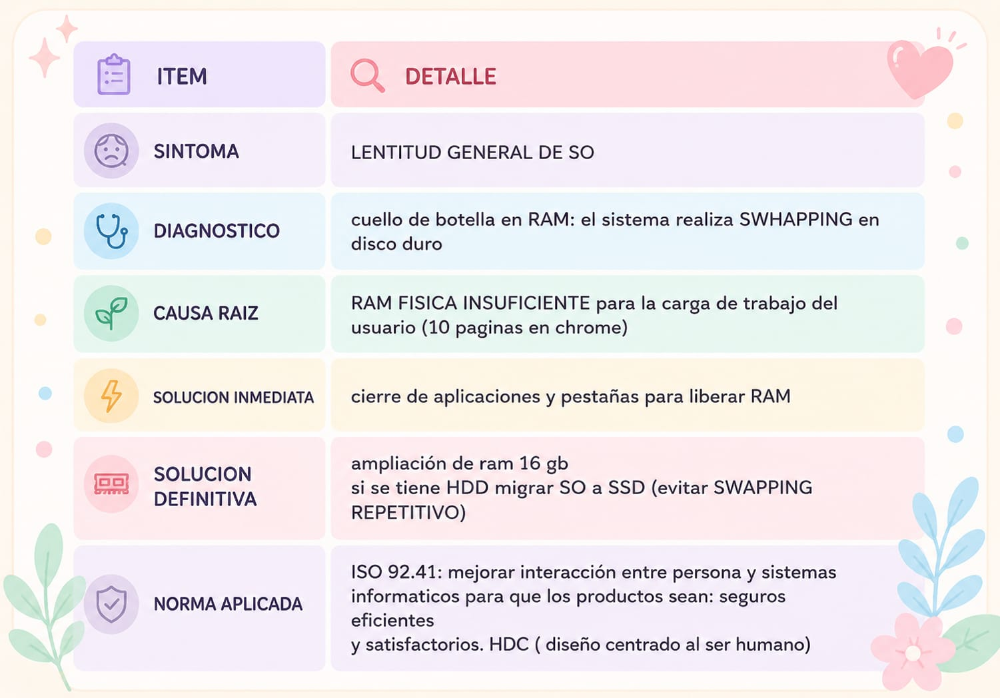

24/04 ACTIVIDAD 3 (RENDIMIENTO - OP. SISTEMA)
CONSIGNA:
al abrir administrador de tarea en PC con windows 10 se observa:
- CPU:15%
- RAM 97%
- DISCO 100%
- GPU 2%. pc lenta, al abrir chrome con 10 pestañas
PALABRAS
- cuello de botella(battle neck): componente que limita el rendimiento del sistema
- administrador de tareas: utilidad de windows SO para ver uso de CPU,RAM,DISCO,RED
- memoria virtual(paging file): espacio de HDD/SSD. windows usa como RAM de emergencia. muy lento
- swapping: proceso de mover datos de ram a memoria virtual por falla de RAM fisico. causa lentitud extrema
1 ¿Cuál es el cuello de botella principal?
RAM. el disco esta al 100% como consecuencia de RAM con un 97%, no hay problema de procesamiento (15%)
2-¿Qué es "Swapping" y porque esta el disco a 100% si la RAM esta en 97%
al agotar ram fisica , mueve datos de ram a archivo de paginacion en el disco (capas de disco) el disco se satura leyendo y escribiendo los datos ya que es 100 mas lenta que RAM,congelandose
3-Proponga 3 soluciones ordenadas de menor a mayor costo para resolver el problema
- cerrar programas/pestañas, liberar ram, limitar inicio automatico (costo cero)
- optimizar windows, desactivar efectos visuales, ajustar memoria virtual (costo:bajo)
- ampliar ram fisica instalar 16 gb (costo alto)
CUADRO DETALLADO
